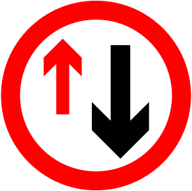

Popularne znaki i ich znaczenie

Śliska droga
Nazwa po angielsku Slippery road
Co oznacza ten znak?
Droga może być śliska.
The road may be slippery.
Pobierz z App StorePopularne znaki i ich znaczenie
Nazwa po angielsku Slippery road
Droga może być śliska.
The road may be slippery.
Pobierz z App StoreZa darmo: 3 działy znaków i 25 słów o częściach samochodu. Signo Pro odblokowuje wszystko.
 Przejazd kolejowy z zaporą lub szlabanem z przoduLevel crossing with gate or barrier ahead
Przejazd kolejowy z zaporą lub szlabanem z przoduLevel crossing with gate or barrier ahead Przejazd kolejowy bez bramy lub szlabanu z przoduRailway level crossing without gate or barrier ahead
Przejazd kolejowy bez bramy lub szlabanu z przoduRailway level crossing without gate or barrier ahead
Ustąp pierwszeństwa pojazdom nadjeżdżającym z przeciwkaGive priority to vehicles from opposite direction Pierwszeństwo przed pojazdami nadjeżdżającymi z przeciwkaTraffic has priority over oncoming vehicles
Pierwszeństwo przed pojazdami nadjeżdżającymi z przeciwkaTraffic has priority over oncoming vehicles Zakaz wjazdu pojazdów wyższych niż podana wysokośćNo vehicles over height shown
Zakaz wjazdu pojazdów wyższych niż podana wysokośćNo vehicles over height shown Skrzyżowanie w kształcie litery T z przoduT-junction ahead
Skrzyżowanie w kształcie litery T z przoduT-junction ahead